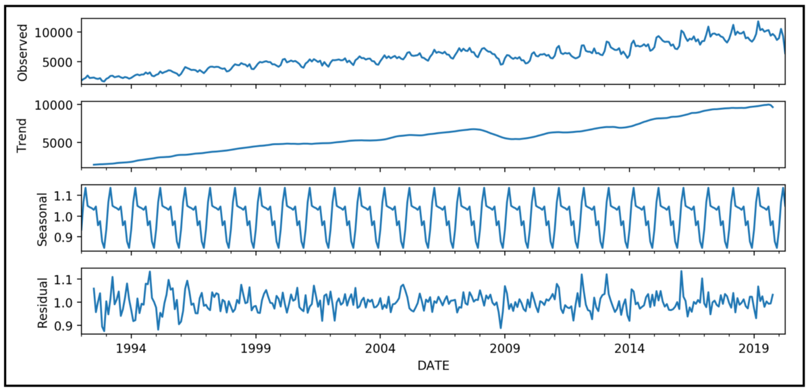

Predictive modeling · Healthcare
CMS Star Ratings predictor
I trained a CatBoost model using plan and measure data to estimate CMS Star Ratings. A Streamlit interface lets users review rating estimates.
- CatBoost
- Streamlit
- CMS
Selected work
Projects in forecasting, predictive modeling, and payer analytics.
Predictive modeling · Healthcare
I trained a CatBoost model using plan and measure data to estimate CMS Star Ratings. A Streamlit interface lets users review rating estimates.
Time series · Forecasting
I used SARIMA to model complaint volume over time and account for seasonal patterns. The forecast provides a baseline for planning.

Anomaly detection · Medicare
I compared Medicare Part D prescribers with their peers. The analysis flags unusual prescribing patterns for further review.
Business intelligence · Medicare
I built a Power BI dashboard to review enrollment by plan and region. It brings trend and comparison views together.
Skills
Work history
Medicare Advantage, Part D, Star Ratings, and payment integrity analysis.
Payer analytics for Medicare Advantage, Part D, and Star Ratings.
Forecasting and predictive modeling for healthcare operations.
Contact